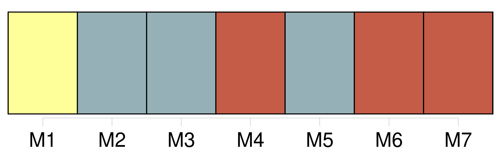

Longueur nb maillons : 55 mentions |
 |
[L'autre] , M.
d'Avancelle, frémissait en l'approchant, [osait] à peine deviner sa tendresse, mais la [suivait] comme [son] ombre, [disant] [son] désir désespéré par des regards éperdus et par l'assiduité de [sa] présence auprès d'elle.
Elle appelait le premier le « Capitaine Fracasse » et [le second] « Mouton Fidèle » ; elle finit par faire de [celui -ci] une sorte d'esclave attaché à ses pas, dont elle usait comme d'un domestique.
Elle eût bien ri si on lui eût dit qu'elle [l'] aimerait. Elle [l'] aima pourtant d'une singulière façon.
Comme elle [le] voyait sans cesse, elle avait pris l'habitude de [sa] voix, de [ses] gestes, de toute l'allure de [sa] personne, comme on prend l'habitude de ceux près de qui on vit continuellement. Bien souvent en ses rêves [son] visage la hantait ; elle [le] revoyait tel qu'il était dans la vie, doux, délicat, humblement passionné ; et elle s'éveillait obsédée du souvenir de ces songes, croyant [l'] entendre encore, et [le] sentir près d'elle.
Or, une nuit ( elle avait la fièvre peut-être ), elle se vit seule avec [lui] , dans un petit bois, assis tous deux sur l'herbe. [Il] lui disait des choses charmantes en lui pressant les mains et les baisant.
Elle sentait la chaleur de sa peau et le souffle de son haleine ; et, d'une façon naturelle, elle [lui] caressait les cheveux. [1 phrases]
Elle se sentait pleine de tendresse pour [lui] , d'une tendresse calme et profonde, heureuse de toucher [son] front et de [le] tenir contre elle. Peu à peu [il] l'enlaçait de [ses] bras, lui baisait les joues et les yeux sans qu'elle fit rien pour [lui] échapper, et leurs lèvres se rencontrèrent. [2 phrases]
Elle s'éveilla, vibrante, éperdue, et ne put se rendormir, tant elle se sentait obsédée, possédée toujours par [lui]
Et quand elle [le] revit, ignorant du trouble qu' [il] avait produit, elle se sentit rougir ; et pendant qu' [il] lui parlait timidement de [son] amour, [elle] se rappelait sans cesse, sans pouvoir rejeter cette pensée, elle se rappelait l'enlacement délicieux de son rêve.
Elle [l'] aima, elle [l'] aima d'une étrange tendresse, raffinée et sensuelle, faite surtout du souvenir de ce songe, bien qu'elle redoutât l'accomplissement du désir qui s'était éveillé dans son âme. [Il] s'en aperçut enfin. Et elle [lui] dit tout, jusqu'à la peur qu'elle avait de ses baisers.
Elle [lui] fit jurer qu' [il] la respecterait. Il [la] respecta. [6 phrases]
Février était clair et doux, et bien qu'elle évitât maintenant de se trouver longtemps seule avec [Mouton Fidèle] , elle acceptait parfois de faire en voiture, avec [lui] , une promenade autour du lac, au crépuscule. [1 phrases] Le petit coupé allait au pas ; la nuit tombait ; ils se tenaient les mains, serrés l'un contre [l'autre] [2 phrases]
[Il] n'osa pas la reconduire chez elle, et la [laissa] sur sa porte, affolée et défaillante. [3 phrases] Elle l'écoutait sans répondre, pensant à [l'autre] , croyant entendre [l'autre] , croyant [le] sentir contre elle, dans une sorte d'hallucination.
Elle ne voyait que [lui] , ne se rappelait plus qu'il existait un autre homme au monde ; et quand son oreille tressaillait à ces trois syllabes : « Je vous aime », c'était lui, l'autre, qui les disait, qui baisait ses doigts, c'était lui qui serrait sa poitrine comme tout à l'heure dans le coupé, c'était lui qui jetait sur ses lèvres ces caresses victorieuses, c'était lui qu'elle étreignait, qu'elle enlaçait, qu'elle appelait de tout l'élan de son coeur, de toute l'ardeur exaspérée de son corps. [13 phrases]
»
Elle [le] reçut sans trouble et sans regrets, comprenant soudain qu'elle ne [l'] avait jamais aimé qu'en un songe dont Paul Péronel l'avait brutalement réveillée. Mais [le jeune homme] , [qui] l'adorait toujours, pensait en s'en retournant : « Les femmes sont vraiment bien bizarres, compliquées et inexplicables. |
|
Il est possible de télécharger la ressource sur la page Ortolang |
Si vous avez des questions ou vous voyez des erreurs, merci d'envoyer un mail à silvia.federzoni89@gmail.com |